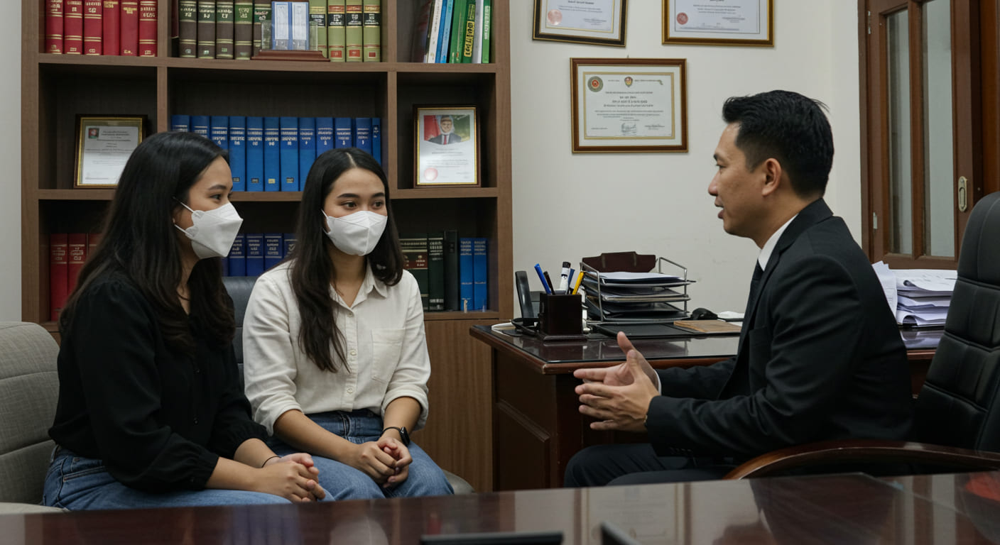

Panduan Hukum Kekerasan Seksual dan Perlindungan Anak: Apa yang Harus Diketahui oleh Korban dan Pelaku

Kekerasan seksual adalah salah satu bentuk pelanggaran hak asasi manusia yang sangat serius dan dapat berdampak jangka panjang pada korban. Selain itu, perlindungan terhadap anak juga menjadi hal yang sangat penting, mengingat anak-anak adalah kelompok yang rentan terhadap kekerasan seksual dan eksploitasi. Dalam menghadapi kasus kekerasan seksual, baik sebagai korban maupun pelaku, penting untuk memahami hak-hak, prosedur hukum, serta langkah-langkah yang perlu diambil dalam proses hukum. Artikel ini akan membahas secara rinci apa yang perlu Anda ketahui jika Anda menjadi korban atau pelaku kekerasan seksual, serta langkah-langkah yang perlu diambil.
Jika Anda Menjadi Korban Kekerasan Seksual
Sebagai korban kekerasan seksual, Anda berhak mendapatkan perlindungan, dukungan, dan keadilan. Berikut adalah langkah-langkah yang perlu diambil jika Anda menjadi korban kekerasan seksual:
1. Laporan Hukum dan Prosedur Pengaduan
Lapor ke Polisi: Langkah pertama yang perlu diambil adalah melaporkan kejadian kekerasan seksual kepada pihak berwenang, yaitu kepolisian. Anda dapat melaporkan kekerasan seksual di kantor polisi terdekat atau menggunakan layanan pengaduan kekerasan seksual yang disediakan oleh beberapa lembaga.
Bukti yang Diperlukan: Anda perlu mengumpulkan bukti yang mendukung laporan Anda, seperti laporan medis dari rumah sakit, bukti fisik, serta saksi yang dapat membantu proses penyidikan. Bukti ini akan sangat penting dalam memperkuat klaim Anda di pengadilan.
2. Hak-hak Korban Kekerasan Seksual
Perlindungan dari Intimidasi: Sebagai korban, Anda berhak mendapatkan perlindungan dari ancaman atau kekerasan lebih lanjut selama proses hukum. Polisi akan mengambil langkah-langkah untuk melindungi Anda dari pelaku.
Pendampingan Hukum: Anda berhak untuk didampingi oleh pengacara selama proses hukum, mulai dari laporan awal hingga pengadilan. Pengacara yang berpengalaman dalam kasus kekerasan seksual dapat memberikan pembelaan yang terbaik.
Akses ke Layanan Kesehatan dan Psikologis: Anda berhak mendapatkan perawatan medis dan psikologis untuk membantu pemulihan fisik dan mental Anda. Banyak lembaga pemerintah dan non-pemerintah yang menawarkan bantuan ini secara gratis atau dengan biaya yang sangat terjangkau.
3. Proses Hukum untuk Korban Kekerasan Seksual
Penyidikan dan Penyusunan Tuntutan: Setelah melapor, polisi akan melakukan penyidikan untuk mengumpulkan bukti. Setelah itu, jaksa akan menentukan apakah kasus ini akan dilanjutkan ke pengadilan atau tidak.
Sidang Pengadilan: Di pengadilan, Anda akan diminta untuk memberikan keterangan terkait kejadian tersebut. Pengadilan akan memutuskan apakah pelaku bersalah atau tidak berdasarkan bukti dan kesaksian.
Ganti Rugi: Selain hukuman penjara atau denda terhadap pelaku, korban berhak untuk mendapatkan ganti rugi atas kerugian yang ditimbulkan, termasuk biaya medis, psikologis, serta kompensasi atas dampak jangka panjang yang dialami.
4. Layanan Perlindungan Korban
Banyak lembaga, baik pemerintah maupun non-pemerintah, yang menyediakan layanan perlindungan dan dukungan untuk korban kekerasan seksual. Layanan ini mencakup tempat aman (shelter), konseling psikologis, serta pendampingan selama proses hukum.
Jika Anda Menjadi Tersangka atau Pelaku Kekerasan Seksual
Jika Anda adalah pelaku atau tersangka dalam kasus kekerasan seksual, penting untuk memahami hak-hak Anda dalam proses hukum dan mencari pembelaan yang tepat. Berikut adalah langkah-langkah yang perlu diambil jika Anda berada dalam posisi ini:
1. Hak-hak Tersangka atau Pelaku
Hak untuk Diam: Sebagai tersangka, Anda memiliki hak untuk diam dan tidak memberikan keterangan yang dapat merugikan diri sendiri. Anda tidak diwajibkan untuk memberikan informasi lebih lanjut kepada pihak penyidik jika jawaban tersebut bisa digunakan untuk melawan Anda.
Pendampingan Pengacara: Anda berhak untuk didampingi oleh pengacara selama proses penyidikan dan persidangan. Pengacara berperan untuk melindungi hak Anda dan memberikan nasihat hukum yang tepat sepanjang proses hukum berlangsung.
2. Prosedur Hukum yang Diterapkan pada Pelaku
Penyidikan: Penyidik akan mengumpulkan bukti-bukti dan saksi-saksi yang terkait dengan kasus tersebut. Anda akan diberikan kesempatan untuk memberikan klarifikasi dan pembelaan atas tuduhan yang diajukan.
Sidang Pengadilan: Di pengadilan, Anda akan diberikan kesempatan untuk membela diri dengan menyampaikan bukti-bukti yang mendukung pembelaan Anda. Pengacara Anda akan membantu menyusun argumen dan strategi untuk membuktikan ketidakbersalahan atau mengurangi hukuman.
Tuntutan Hukum: Jika terbukti bersalah, Anda bisa dijatuhi hukuman penjara, denda, atau tindakan lain sesuai dengan hukum yang berlaku. Namun, jika ada bukti yang meringankan, pengadilan dapat memutuskan hukuman yang lebih ringan.
3. Alternatif Penyelesaian dan Restorative Justice
Dalam beberapa kasus, penyelesaian melalui mediasi atau keadilan restoratif bisa dilakukan, terutama jika kedua belah pihak sepakat untuk mencari penyelesaian damai. Pendekatan ini memungkinkan pihak korban dan pelaku untuk mencapai kesepakatan tanpa melalui proses pengadilan yang panjang.
4. Penyusunan Pembelaan dan Pembuktian
Bukti yang Diperlukan: Anda atau pengacara Anda akan mengumpulkan bukti yang dapat mengurangi kesalahan atau menunjukkan bahwa Anda tidak bersalah. Bukti seperti alibi, kesalahan identifikasi, atau kurangnya bukti fisik bisa menjadi bagian dari pembelaan Anda.
Strategi Pembelaan: Pengacara Anda akan menyusun pembelaan yang sesuai, baik itu berdasarkan keraguan yang wajar, tidak cukup bukti, atau alasan lainnya yang dapat mengurangi atau membantah tuduhan terhadap Anda.
Kesimpulan: Perlindungan dan Keadilan bagi Korban dan Pelaku
Kasus kekerasan seksual adalah masalah yang sangat serius dan memerlukan perhatian hukum yang serius pula. Baik sebagai korban maupun pelaku, memahami hak-hak Anda dan prosedur hukum yang berlaku sangat penting untuk memastikan bahwa proses hukum berlangsung dengan adil dan sesuai dengan ketentuan yang berlaku. Korban kekerasan seksual berhak mendapatkan perlindungan, dukungan, dan keadilan, sementara pelaku berhak untuk mendapatkan pembelaan hukum yang adil dan memastikan bahwa hak-haknya dihormati dalam proses hukum.
Jika Anda adalah korban atau pelaku dalam kasus kekerasan seksual, sangat penting untuk segera mencari bantuan hukum dari pengacara berpengalaman untuk memastikan hak-hak Anda terlindungi dan Anda mendapatkan proses hukum yang adil.